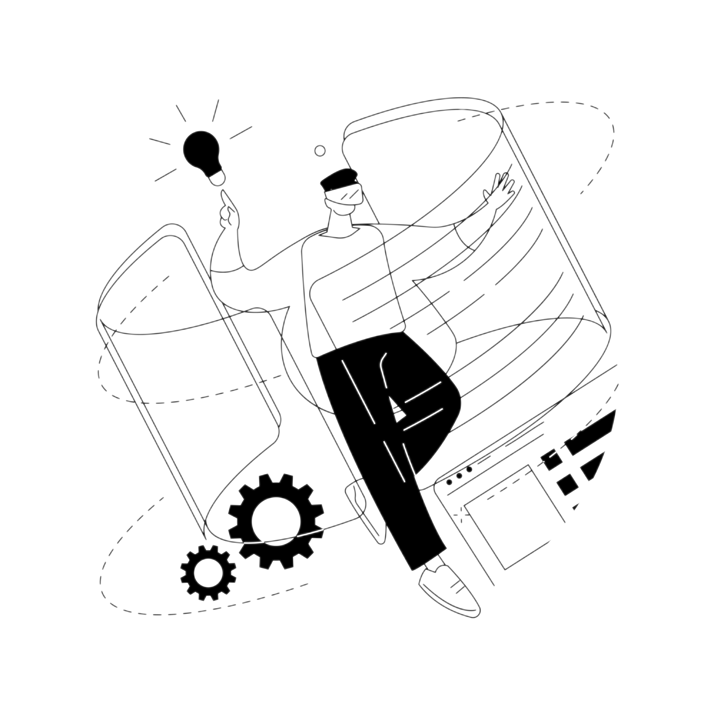

A Engenharia de Software evoluiu ao longo das décadas para resolver desafios e dentro dela surgiram diversos conceitos que ajudaram a resolver problemas, aprimorar métodos e tornar o desenvolvimento mais eficiente.
Explore cada conceito e descubra como a tecnologia aprendeu a se organizar para transformar ideias em soluções reais.